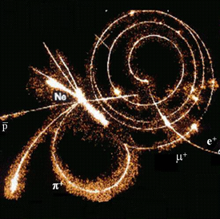

| | | Hobbies | | | Exercises | | | Final Project |
I do believe I will base my final project on particle physics. The website will focus on the basics of particle phsyics, starting from its history through to Higg's field theory. I am going to rely on wikipedia as well as other sources to grab my documentation. I'll try to deal with these main areas of the topic:
|